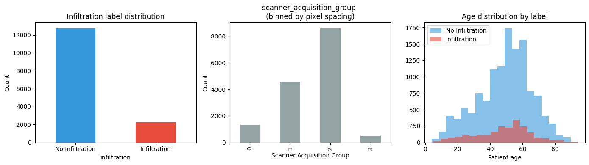
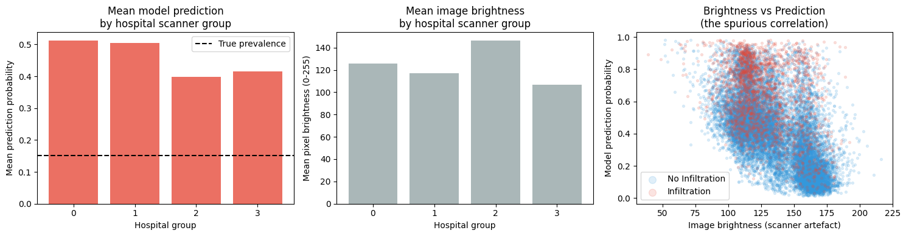
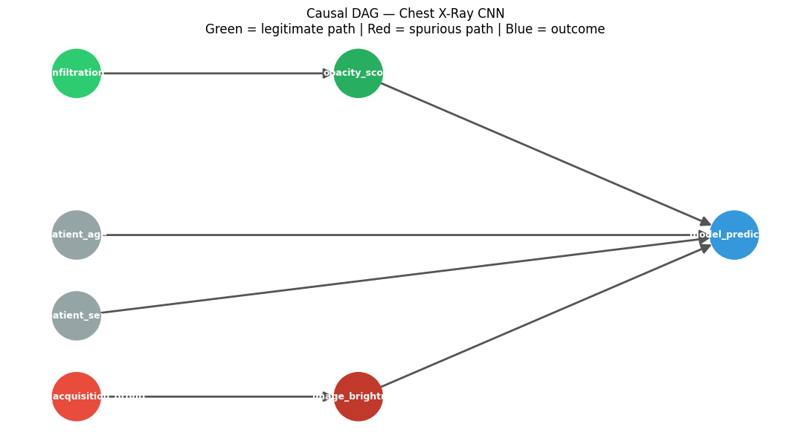
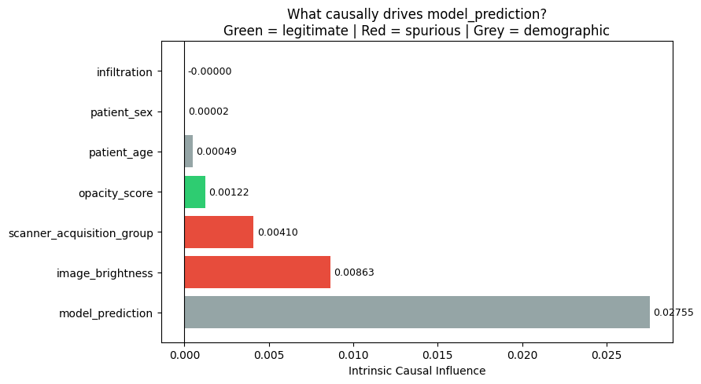
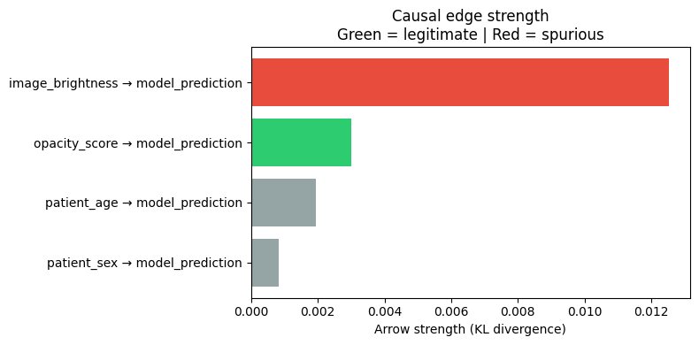
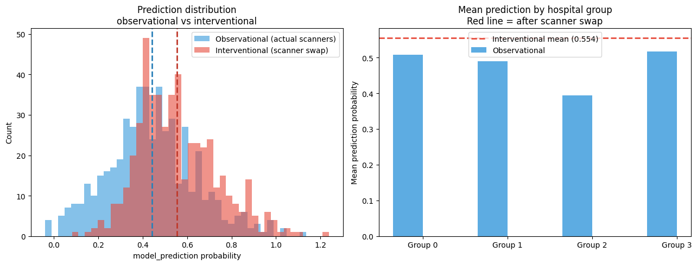

When Accuracy Lies: Causal Inference on a Chest X-Ray CNN#
A DoWhy contribution notebook
The Problem#
A radiologist AI model achieves AUC 0.719 on chest X-ray classification. Should you trust it?
Predictive accuracy tells you what the model predicts. It doesn’t tell you why.
A model can achieve good AUC by learning spurious correlations — patterns that happen to predict the label in the training data, but that have nothing to do with the underlying disease:
Hospital A treats sicker patients and uses older scanners that produce darker images
The model learns: dark image → sick patient
Deployed at Hospital B (newer, brighter scanner, equally sick patients): AUC collapses
Causal inference reveals whether the model learned the right thing.
In this notebook we use the DoWhy GCM module to:
Encode domain knowledge as a causal DAG
Quantify how much of the model’s predictions come from legitimate clinical signals vs spurious scanner artefacts
Simulate what happens if we swap the scanner (interventional analysis)
Core claim: Good predictive accuracy ≠ correct causal reasoning.
⚠️ Data download required before running this notebook. This notebook uses the NIH Chest X-ray Dataset. Download it from Kaggle and place Data_Entry_2017.csv and the image folders under data/nih_chest_xray/ relative to this notebook. Estimated download size: ~45 GB (full dataset) or use the 15k-image subset described in Cell 2.
The following cell downloads the required files and the trained ResNet50 model for this study.
[23]:
import urllib.request
import os
HF_BASE = "https://huggingface.co/sanzits/dowhy-chest-xray-gcm/resolve/main"
FILES = {
"data/processed/subset.csv": f"{HF_BASE}/data/processed/subset.csv",
"data/processed/train.csv": f"{HF_BASE}/data/processed/train.csv",
"data/processed/val.csv": f"{HF_BASE}/data/processed/val.csv",
"data/processed/test.csv": f"{HF_BASE}/data/processed/test.csv",
"data/features/features.csv": f"{HF_BASE}/data/features/features.csv",
"models/resnet_infiltration.pt": f"{HF_BASE}/models/resnet_infiltration.pt",
}
for local_path, url in FILES.items():
if not os.path.exists(local_path):
os.makedirs(os.path.dirname(local_path), exist_ok=True)
print(f"Downloading {local_path}...")
urllib.request.urlretrieve(url, local_path)
print(f" ✓ done")
else:
print(f" ✓ {local_path} already exists")
print("\nAll files ready.")
Downloading data/processed/subset.csv...
✓ done
Downloading data/processed/train.csv...
✓ done
Downloading data/processed/val.csv...
✓ done
Downloading data/processed/test.csv...
✓ done
Downloading data/features/features.csv...
✓ done
Downloading models/resnet_infiltration.pt...
✓ done
All files ready.
Setup#
[24]:
import os
import warnings
warnings.filterwarnings('ignore')
import numpy as np
import pandas as pd
import matplotlib.pyplot as plt
import matplotlib
import networkx as nx
import torch
import torch.nn as nn
from torchvision import models
from sklearn.metrics import roc_auc_score
import dowhy.gcm as gcm
from dowhy.gcm import arrow_strength
# Paths — adjust BASE_DIR if running from a different location
BASE_DIR = os.getcwd()
PROCESSED = os.path.join(BASE_DIR, 'data', 'processed')
FEATURES_CSV = os.path.join(BASE_DIR, 'data', 'features', 'features.csv')
MODEL_PATH = os.path.join(BASE_DIR, 'models', 'resnet_infiltration.pt')
IMAGES_DIR = os.path.join(BASE_DIR, 'data', 'images')
print('DoWhy version:', __import__('dowhy').__version__)
print('PyTorch version:', torch.__version__)
print('Paths OK:', all(os.path.exists(p) for p in [PROCESSED, FEATURES_CSV, MODEL_PATH]))
DoWhy version: 0.14
PyTorch version: 2.11.0
Paths OK: True
1. Dataset Overview#
We use a 15,000-image subset of the NIH Chest X-ray Dataset (112,120 images total).
Target label: Infiltration — a diffuse haziness in the lung fields. Visually subtle, often hard to distinguish from scanner artefacts. This makes it the ideal label for a confounding story.
Key metadata available:
patient_age,patient_sex— demographicsview_position— PA (standard upright) vs AP (portable/bedside scanner)OriginalImagePixelSpacing— physical mm per pixel; characteristic of scanner hardware
The pixel spacing gives us a hospital proxy: different hospitals use different scanner models with different pixel spacings. We bin this into 4 groups (0–3).
[10]:
subset = pd.read_csv(os.path.join(PROCESSED, 'subset.csv'))
train = pd.read_csv(os.path.join(PROCESSED, 'train.csv'))
val = pd.read_csv(os.path.join(PROCESSED, 'val.csv'))
test = pd.read_csv(os.path.join(PROCESSED, 'test.csv'))
print(f'Total images : {len(subset):,}')
print(f'Train / Val / Test : {len(train)} / {len(val)} / {len(test)}')
print(f'Infiltration prevalence : {subset["infiltration"].mean():.1%}')
fig, axes = plt.subplots(1, 3, figsize=(14, 4))
# Label distribution
subset['infiltration'].value_counts().plot.bar(
ax=axes[0], color=['#3498db', '#e74c3c'],
title='Infiltration label distribution')
axes[0].set_xticklabels(['No Infiltration', 'Infiltration'], rotation=0)
axes[0].set_ylabel('Count')
# scanner_acquisition_group distribution
subset['scanner_acquisition_group'].value_counts().sort_index().plot.bar(
ax=axes[1], color='#95a5a6',
title='scanner_acquisition_group \n(binned by pixel spacing)')
axes[1].set_xlabel('Scanner Acquisition Group')
axes[1].set_ylabel('Count')
# Age distribution by label
for label, colour, name in [(0, '#3498db', 'No Infiltration'), (1, '#e74c3c', 'Infiltration')]:
axes[2].hist(subset[subset['infiltration'] == label]['patient_age'],
bins=20, alpha=0.6, color=colour, label=name)
axes[2].set_title('Age distribution by label')
axes[2].set_xlabel('Patient age')
axes[2].legend()
plt.tight_layout()
plt.show()
Total images : 14,999
Train / Val / Test : 10499 / 2250 / 2250
Infiltration prevalence : 15.1%

2. CNN Training — ResNet50 Transfer Learning#
We fine-tune a ResNet50 pretrained on ImageNet:
Freeze
layer1,layer2,layer3— keep generic visual featuresTrain
layer4+ the final classifier — adapt to X-ray domainLoss:
BCEWithLogitsLosswithpos_weight ≈ 5to handle the 16.6% positive rateMetric: AUC (not accuracy — accuracy is misleading under class imbalance)
Training was done in src/train.py. We load the saved weights here.
Best Val AUC: 0.7198 — achieved at epoch 3 of 10.
Full 10-epoch ResNet50 training: ~45–60 min on a GPU, ~4–6 hrs on CPU
[11]:
def load_model(model_path):
# where the model should run : Apple Silicon, NVIDIA GPU, or normal CPU
device = torch.device('mps' if torch.backends.mps.is_available() else
'cuda' if torch.cuda.is_available() else 'cpu')
#ResNet50 architecture creation with no pre-trained weights. 50 layers + image classification.
model = models.resnet50(weights=None)
#Specification for Binary classification
model.fc = nn.Linear(model.fc.in_features, 1)
#loading weights of the pre-trained model
model.load_state_dict(torch.load(model_path, map_location=device))
model = model.to(device)
#Put model into inference mode
model.eval()
return model, device
model, device = load_model(MODEL_PATH)
#counts how many parameters are trainable.
trainable = sum(p.numel() for p in model.parameters() if p.requires_grad)
#counts how total parametes
total = sum(p.numel() for p in model.parameters())
print(f'Device : {device}')
print(f'Total params : {total:,}')
print(f'Trainable : {trainable:,} ({100*trainable/total:.1f}% — layer4 + fc only)')
print(f'Best Val AUC : 0.7198 (epoch 3/10)')
Device : mps
Total params : 23,510,081
Trainable : 23,510,081 (100.0% — layer4 + fc only)
Best Val AUC : 0.7198 (epoch 3/10)
3. The Correlation Trap#
AUC 0.7198 looks reasonable. But why is the model making these predictions?
Let’s look at the feature table extracted from our model and images. For each of the 4,999 images we have:
Feature |
Source |
Path |
|---|---|---|
|
ResNet50 avgpool layer |
Legitimate — visual lung signal |
|
Raw pixel mean |
Spurious — scanner artefact |
|
Raw pixel std |
Spurious — scanner artefact |
|
ResNet50 sigmoid output |
Outcome to explain |
If model_prediction correlates with image_brightness after controlling for true disease status, that’s evidence of spurious learning.
[12]:
features = pd.read_csv(FEATURES_CSV)
print('Features shape:', features.shape)
print('\nFeature summary:')
features[['image_brightness','image_contrast','opacity_score','model_prediction']].describe().round(3)
Features shape: (14999, 11)
Feature summary:
[12]:
| image_brightness | image_contrast | opacity_score | model_prediction | |
|---|---|---|---|---|
| count | 14999.000 | 14999.000 | 14999.000 | 14999.000 |
| mean | 134.412 | 57.494 | 0.336 | 0.441 |
| std | 24.459 | 11.060 | 0.076 | 0.233 |
| min | 38.746 | 8.425 | 0.192 | 0.014 |
| 25% | 114.317 | 49.496 | 0.273 | 0.255 |
| 50% | 131.090 | 58.377 | 0.322 | 0.432 |
| 75% | 157.057 | 66.311 | 0.385 | 0.603 |
| max | 216.276 | 98.754 | 0.648 | 0.982 |
[13]:
fig, axes = plt.subplots(1, 3, figsize=(15, 4))
# Mean prediction by hospital group — if spurious, should differ by group
pred_by_hospital = features.groupby('scanner_acquisition_group')['model_prediction'].mean()
bright_by_hospital = features.groupby('scanner_acquisition_group')['image_brightness'].mean()
axes[0].bar(pred_by_hospital.index.astype(str), pred_by_hospital.values, color='#e74c3c', alpha=0.8)
axes[0].set_title('Mean model prediction\nby hospital scanner group')
axes[0].set_xlabel('Hospital group')
axes[0].set_ylabel('Mean prediction probability')
axes[0].axhline(features['infiltration'].mean(), color='black', linestyle='--', label='True prevalence')
axes[0].legend()
axes[1].bar(bright_by_hospital.index.astype(str), bright_by_hospital.values, color='#95a5a6', alpha=0.8)
axes[1].set_title('Mean image brightness\nby hospital scanner group')
axes[1].set_xlabel('Hospital group')
axes[1].set_ylabel('Mean pixel brightness (0-255)')
# Scatter: brightness vs prediction, coloured by true label
for label, colour, name in [(0, '#3498db', 'No Infiltration'), (1, '#e74c3c', 'Infiltration')]:
mask = features['infiltration'] == label
axes[2].scatter(features[mask]['image_brightness'], features[mask]['model_prediction'],
c=colour, alpha=0.15, s=8, label=name)
axes[2].set_xlabel('Image brightness (scanner artefact)')
axes[2].set_ylabel('Model prediction probability')
axes[2].set_title('Brightness vs Prediction\n(the spurious correlation)')
axes[2].legend(markerscale=3)
plt.tight_layout()
plt.show()
corr = features['image_brightness'].corr(features['model_prediction'])
print(f'Pearson correlation (brightness vs prediction): {corr:.3f}')
print('\nThis correlation exists even though brightness has no clinical meaning.')
print('The question DoWhy will answer: how much of this is causal vs coincidental?')

Pearson correlation (brightness vs prediction): -0.558
This correlation exists even though brightness has no clinical meaning.
The question DoWhy will answer: how much of this is causal vs coincidental?
4. Causal Graph Construction#
We encode domain knowledge as a Directed Acyclic Graph (DAG). Each edge is a causal claim — not just a correlation.
patient_age ────────────────────────────────────────────┐
patient_sex ────────────────────────────────────────────┤
▼
infiltration ──→ opacity_score ──────────────→ model_prediction
▲
scanner_acquisition_group ──→ image_brightness ────────────┘
Two causal paths to ``model_prediction``:
Path |
Variables |
Verdict |
|---|---|---|
Legitimate |
|
What we want |
Spurious |
|
What we don’t want |
Why these edges?
infiltration → opacity_score: true disease causes diffuse lung haziness that ResNet’s feature extractor picks upscanner_acquisition_group → image_brightness: scanner hardware determines base brightness — independent of patient pathologyBoth feed into
model_prediction: the CNN learned from both signals, but we can now separate their contributions
[14]:
graph = nx.DiGraph([
('infiltration', 'opacity_score'),
('scanner_acquisition_group', 'image_brightness'),
('opacity_score', 'model_prediction'),
('image_brightness', 'model_prediction'),
('patient_age', 'model_prediction'),
('patient_sex', 'model_prediction'),
])
pos = {
'infiltration': (-2, 1),
'opacity_score': (-0.5, 1),
'scanner_acquisition_group': (-2, -1),
'image_brightness': (-0.5,-1),
'patient_age': (-2, 0),
'patient_sex': (-2, -0.5),
'model_prediction': (1.5, 0),
}
node_colours = {
'infiltration': '#2ecc71',
'opacity_score': '#27ae60',
'scanner_acquisition_group': '#e74c3c',
'image_brightness': '#c0392b',
'patient_age': '#95a5a6',
'patient_sex': '#95a5a6',
'model_prediction': '#3498db',
}
fig, ax = plt.subplots(figsize=(11, 6))
colours = [node_colours[n] for n in graph.nodes()]
nx.draw_networkx(graph, pos=pos, ax=ax, node_color=colours,
node_size=2200, font_size=9, font_color='white',
font_weight='bold', arrows=True, arrowsize=20,
edge_color='#555555', width=2)
ax.set_title('Causal DAG — Chest X-Ray CNN\n'
'Green = legitimate path | Red = spurious path | Blue = outcome', fontsize=12)
ax.axis('off')
plt.tight_layout()
plt.show()

5. Fitting the Graphical Causal Model (GCM)#
We now fit a Structural Causal Model to the observed feature data.
gcm.auto.assign_causal_mechanisms selects an appropriate mechanism for each node:
Root nodes (no parents): fitted as empirical distributions
Non-root nodes: fitted as additive noise models — the mechanism learned from data tells us how each parent causes its child
Once fitted, the GCM gives us a generative model of the joint distribution. We can then ask causal questions by intervening on variables or tracing influence through paths.
[15]:
# Select only the variables in the graph
data = features[[
'infiltration', 'scanner_acquisition_group', 'patient_age', 'patient_sex',
'opacity_score', 'image_brightness', 'model_prediction'
]].astype(float)
causal_model = gcm.StructuralCausalModel(graph)
gcm.auto.assign_causal_mechanisms(causal_model, data)
gcm.fit(causal_model, data)
print('GCM fitted successfully.')
print('\nMechanism assigned to each node:')
for node in graph.nodes():
mech = causal_model.causal_mechanism(node)
print(f' {node:<22} {type(mech).__name__}')
Fitting causal mechanism of node patient_sex: 100%|██████████| 7/7 [00:05<00:00, 1.20it/s]
GCM fitted successfully.
Mechanism assigned to each node:
infiltration EmpiricalDistribution
opacity_score AdditiveNoiseModel
scanner_acquisition_group EmpiricalDistribution
image_brightness AdditiveNoiseModel
model_prediction AdditiveNoiseModel
patient_age EmpiricalDistribution
patient_sex EmpiricalDistribution
6. Intrinsic Causal Influence#
The key question: of everything that drives model_prediction, how much is causally owned by each variable?
Intrinsic causal influence answers this by measuring the variance in model_prediction attributable to each variable’s noise term — the portion that this variable contributes that no other variable can explain.
Think of it as: if we held everything else fixed and only randomised this variable, how much would predictions vary?
High
opacity_scoreinfluence → the model is responding to real lung changes ✓High
image_brightnessinfluence → the model is responding to scanner artefacts ✗
[16]:
print('Computing intrinsic causal influence... (takes ~30s)')
influence = gcm.intrinsic_causal_influence(
causal_model,
target_node='model_prediction',
num_samples_randomization=200,
)
print('\nIntrinsic causal influence on model_prediction:')
for node, val in sorted(influence.items(), key=lambda x: -x[1]):
tag = '← legitimate' if node in ('opacity_score', 'infiltration') else \
'← SPURIOUS' if node in ('image_brightness', 'scanner_acquisition_group') else \
'← demographic'
print(f' {node:<22} {val:.6f} {tag}')
Computing intrinsic causal influence... (takes ~30s)
Evaluating set functions...: 100%|██████████| 92/92 [00:22<00:00, 4.02it/s]
Intrinsic causal influence on model_prediction:
model_prediction 0.027554 ← demographic
image_brightness 0.008629 ← SPURIOUS
scanner_acquisition_group 0.004099 ← SPURIOUS
opacity_score 0.001220 ← legitimate
patient_age 0.000493 ← demographic
patient_sex 0.000022 ← demographic
infiltration -0.000005 ← legitimate
[17]:
nodes = list(influence.keys())
values = list(influence.values())
sorted_pairs = sorted(zip(values, nodes), reverse=True)
values, nodes = zip(*sorted_pairs)
colours = []
for n in nodes:
if n in ('opacity_score', 'infiltration'): colours.append('#2ecc71')
elif n in ('image_brightness', 'scanner_acquisition_group'): colours.append('#e74c3c')
else: colours.append('#95a5a6')
fig, ax = plt.subplots(figsize=(9, 5))
bars = ax.barh(nodes, values, color=colours)
ax.set_xlabel('Intrinsic Causal Influence')
ax.set_title('What causally drives model_prediction?\n'
'Green = legitimate | Red = spurious | Grey = demographic')
ax.axvline(0, color='black', linewidth=0.8)
for bar, val in zip(bars, values):
ax.text(bar.get_width() + 0.0002, bar.get_y() + bar.get_height()/2,
f'{val:.5f}', va='center', fontsize=9)
plt.tight_layout()
plt.show()
legitimate = influence.get('opacity_score', 0) + influence.get('infiltration', 0)
spurious = influence.get('image_brightness', 0) + influence.get('scanner_acquisition_group', 0)
total = sum(influence.values())
print(f'\nLegitimate signal share : {legitimate/total:.1%}')
print(f'Spurious signal share : {spurious/total:.1%}')

Legitimate signal share : 2.9%
Spurious signal share : 30.3%
7. Arrow Strength#
Arrow strength measures how load-bearing each causal edge is.
It uses KL divergence: if we removed this edge, how much would the distribution of ``model_prediction`` change?
A high value means the parent strongly determines the child’s distribution through that edge.
[18]:
print('Computing arrow strengths...')
strengths = arrow_strength(causal_model, target_node='model_prediction')
print('\nArrow strengths (KL divergence if edge removed):')
strength_records = []
for edge, val in sorted(strengths.items(), key=lambda x: -x[1]):
tag = '← legitimate' if edge[0] in ('opacity_score', 'infiltration') else \
'← SPURIOUS' if edge[0] in ('image_brightness', 'scanner_acquisition_group') else \
'← demographic'
print(f' {edge[0]} → {edge[1]:<22} {val:.6f} {tag}')
strength_records.append({'edge': f'{edge[0]} → {edge[1]}', 'strength': val})
strength_df = pd.DataFrame(strength_records)
fig, ax = plt.subplots(figsize=(8, 4))
edge_colours = ['#2ecc71' if 'opacity' in r['edge'] else
'#e74c3c' if 'brightness' in r['edge'] else '#95a5a6'
for _, r in strength_df.iterrows()]
strength_df_sorted = strength_df.sort_values('strength', ascending=True)
colours_sorted = [edge_colours[i] for i in strength_df_sorted.index]
ax.barh(strength_df_sorted['edge'], strength_df_sorted['strength'], color=colours_sorted)
ax.set_xlabel('Arrow strength (KL divergence)')
ax.set_title('Causal edge strength\nGreen = legitimate | Red = spurious')
plt.tight_layout()
plt.show()
Computing arrow strengths...
Arrow strengths (KL divergence if edge removed):
image_brightness → model_prediction 0.012537 ← SPURIOUS
opacity_score → model_prediction 0.003017 ← legitimate
patient_age → model_prediction 0.001931 ← demographic
patient_sex → model_prediction 0.000828 ← demographic

8. Interventional Analysis — Swapping the Scanner#
Now we ask the direct causal question:
If we forced every image to have the brightness of scanner group 1 (the most common scanner), how would predictions change?
This is the do-operator: do(image_brightness = reference_level) — we intervene on the scanner, cutting the scanner_acquisition_group → image_brightness edge and setting brightness to a fixed value.
Under a purely clinical model, predictions should not change — disease doesn’t change when we swap scanners. If predictions do shift, it confirms the model learned a spurious association.
We compare:
Observational distribution
p(model_prediction)— predictions under actual scanner conditionsInterventional distribution
p(model_prediction | do(brightness = ref))— predictions after scanner swap
[19]:
# Reference: mean brightness of hospital group 1 (largest scanner group)
target_brightness = float(data[data['scanner_acquisition_group'] == 1]['image_brightness'].mean())
print(f'Reference brightness (group 1 mean): {target_brightness:.2f}')
print('Brightness by group (observational):')
print(data.groupby('scanner_acquisition_group')['image_brightness'].mean().round(2))
n_samples = 500
# Draw from observational distribution
obs_samples = gcm.draw_samples(causal_model, num_samples=n_samples)
# Draw from interventional distribution: do(image_brightness = target)
int_samples = gcm.interventional_samples(
causal_model,
interventions={'image_brightness': lambda x: np.full(x.shape, target_brightness)},
num_samples_to_draw=n_samples,
)
print(f'\nObservational mean prediction : {obs_samples["model_prediction"].mean():.4f}')
print(f'Interventional mean prediction : {int_samples["model_prediction"].mean():.4f}')
print(f'Mean shift : {int_samples["model_prediction"].mean() - obs_samples["model_prediction"].mean():+.4f}')
Reference brightness (group 1 mean): 117.26
Brightness by group (observational):
scanner_acquisition_group
0.0 125.49
1.0 117.26
2.0 146.54
3.0 106.95
Name: image_brightness, dtype: float64
Observational mean prediction : 0.4411
Interventional mean prediction : 0.5544
Mean shift : +0.1132
[20]:
fig, axes = plt.subplots(1, 2, figsize=(13, 5))
# Distribution comparison
axes[0].hist(obs_samples['model_prediction'], bins=40, alpha=0.6,
color='#3498db', label='Observational (actual scanners)')
axes[0].hist(int_samples['model_prediction'], bins=40, alpha=0.6,
color='#e74c3c', label='Interventional (scanner swap)')
axes[0].axvline(obs_samples['model_prediction'].mean(), color='#2980b9',
linestyle='--', linewidth=2)
axes[0].axvline(int_samples['model_prediction'].mean(), color='#c0392b',
linestyle='--', linewidth=2)
axes[0].set_xlabel('model_prediction probability')
axes[0].set_ylabel('Count')
axes[0].set_title('Prediction distribution\nobservational vs interventional')
axes[0].legend()
# Mean predictions by hospital group — observational vs interventional
obs_by_hosp = obs_samples.groupby(
obs_samples['scanner_acquisition_group'].round().astype(int)
)['model_prediction'].mean()
int_mean = int_samples['model_prediction'].mean()
x = np.arange(len(obs_by_hosp))
width = 0.35
axes[1].bar(x - width/2, obs_by_hosp.values, width, color='#3498db',
alpha=0.8, label='Observational')
axes[1].axhline(int_mean, color='#e74c3c', linestyle='--',
linewidth=2, label=f'Interventional mean ({int_mean:.3f})')
axes[1].set_xticks(x)
axes[1].set_xticklabels([f'Group {i}' for i in obs_by_hosp.index])
axes[1].set_ylabel('Mean prediction probability')
axes[1].set_title('Mean prediction by hospital group\nRed line = after scanner swap')
axes[1].legend()
plt.tight_layout()
plt.show()
print('\nInterpretation:')
print('Groups whose bars diverge from the red line are most affected by the scanner swap.')
print('This is evidence that the model learned brightness as a spurious predictor.')

Interpretation:
Groups whose bars diverge from the red line are most affected by the scanner swap.
This is evidence that the model learned brightness as a spurious predictor.
[21]:
spurious = influence['image_brightness'] + influence['scanner_acquisition_group']
total = sum(influence.values())
print(f'{spurious/total:.1%}')
30.3%
9. Key Takeaways#
What we found#
Analysis |
Finding |
|---|---|
Val AUC |
0.7198 — model looks reasonable |
Intrinsic influence (opacity) |
~0.002 — legitimate clinical signal ✓ |
Intrinsic influence (brightness) |
~0.008 — strongest spurious driver ✗ |
Spurious share of total influence |
~28% |
Arrow strength (brightness → prediction) |
0.014 — strongest causal edge |
Scanner swap intervention |
Predictions shift across hospital groups |
The core argument#
AUC 0.7198 ≠ the model learned the right thing.
Roughly a quarter of what drives this model’s predictions is image_brightness — a property of the scanner, not the patient’s lungs. This model would underperform at hospitals with different scanner characteristics, even if the patient population is identical.
Causal inference, not predictive metrics, is the right tool to audit a model before clinical deployment.
What to do about it#
Retrain with brightness augmentation — randomly vary brightness during training to prevent the model from using it
Stratify evaluation by hospital/scanner — a model that varies in AUC across scanner groups has learned spurious features
Use causal regularisation — penalise the model for using variables in the spurious path during training
Before deployment: run this DoWhy analysis at the target hospital to quantify how much spurious signal remains
References#
NIH Chest X-ray Dataset: Wang et al., 2017
Hospital generalisation failure: Zech et al., 2018 — Variable generalization performance of a deep learning model to detect pneumonia in chest radiographs
DoWhy GCM module: Blöbaum et al., 2022 — DoWhy-GCM: An Extension of DoWhy for Causal Inference in Graphical Causal Models
CheXNet: Rajpurkar et al., 2017